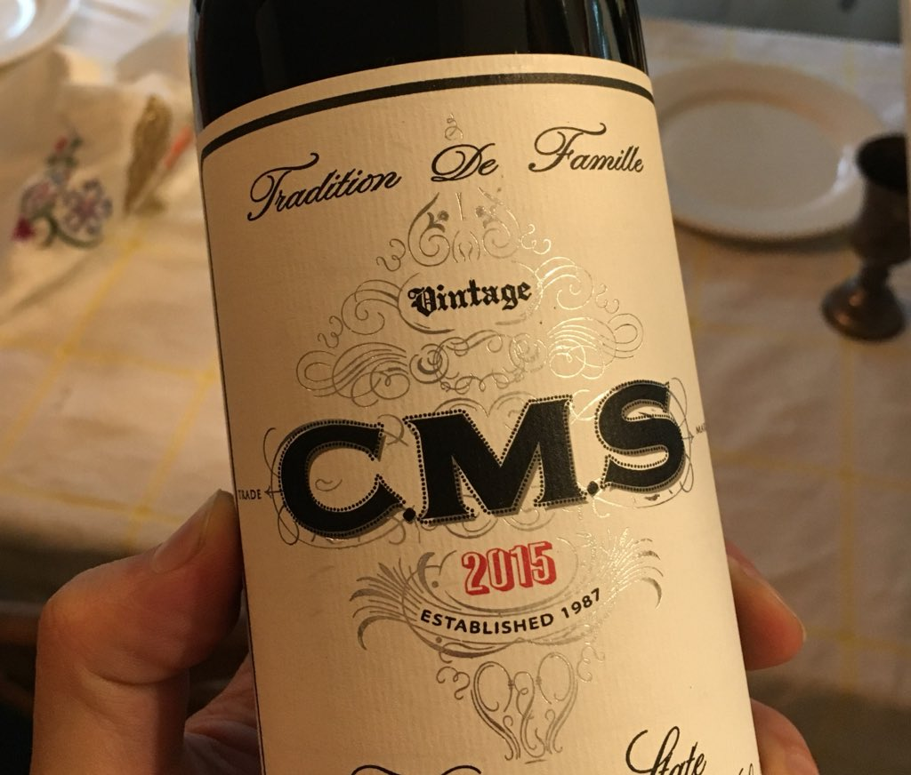

  	<div class="flex-wrap">
      
  	  <article class="tweet  " id="main">
  	    <p class="full_text">
  	      So, some sort of CGI bin thing? <div class="gallery"><ul><li><a href="../../tweets_media/1039331376271523840-DmxyXviV4AEKP9k.jpg"></a></li></ul></div>
  	    </p>
  	    <p class="created_at">
  	      9/10/2018, 6:54:44 PM
  	    </p>
  	    <p class="favorite_count">Favs: 1</p>
  	    <p class="retweet_count">Retweets: 1</p>
  	    <a class="permalink" href="../1039331376271523840">link</a>
  	  </article>

  	</div>
  </div>
